Hadeano
Formação inicial da Terra e da Lua. O planeta era extremamente quente e sofria intenso bombardeio de corpos celestes.
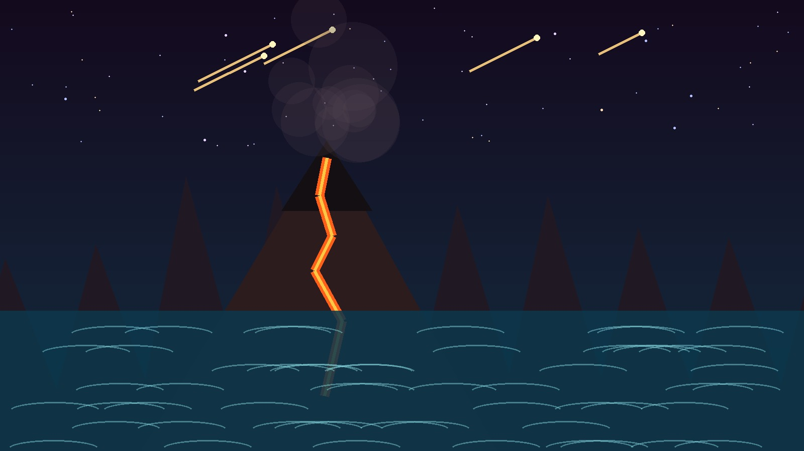
Imagem principalEra 01 · Projeto Dinovadores
De cerca de 4,6 bilhões a 541 milhões de anos atrás
O Pré-Cambriano representa a maior parte da história da Terra. Foi nesse longo intervalo que o planeta se formou, surgiram os primeiros oceanos, a atmosfera começou a se transformar e apareceram as primeiras formas de vida.
Experiência interativa
Gire, aproxime e observe uma estrutura formada pela atividade de comunidades microbianas. Os estromatólitos estão entre os registros mais marcantes da vida antiga e representam muito bem a longa história biológica do Pré-Cambriano.
Em celulares compatíveis, toque no botão de realidade aumentada para posicionar o modelo no ambiente ao seu redor.
Arquivo esperado: assets/models/stromatolite.glb
Linha do tempo
O Pré-Cambriano não é uma única era, mas um grande intervalo dividido em três éons.
Formação inicial da Terra e da Lua. O planeta era extremamente quente e sofria intenso bombardeio de corpos celestes.
Formação de crostas mais estáveis, oceanos primitivos e surgimento das primeiras formas de vida microscópica.
Aumento do oxigênio na atmosfera e aparecimento de organismos mais complexos e multicelulares.
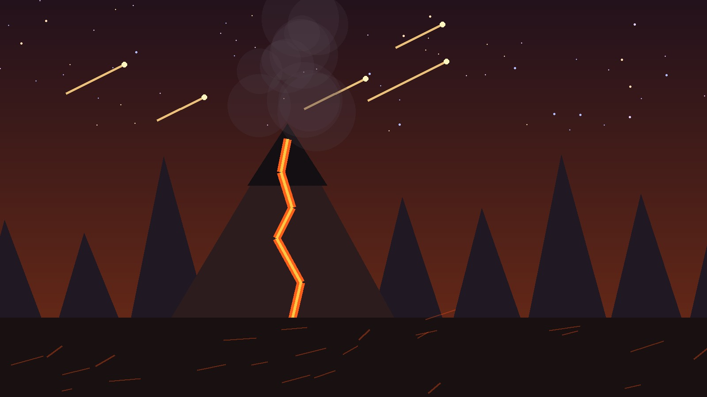
Capítulo 01
No início, a superfície terrestre era muito quente e instável. Vulcões, impactos de meteoritos e gases liberados do interior do planeta moldavam um ambiente muito diferente do atual.
Com o resfriamento gradual, começaram a se formar as primeiras porções sólidas da crosta.
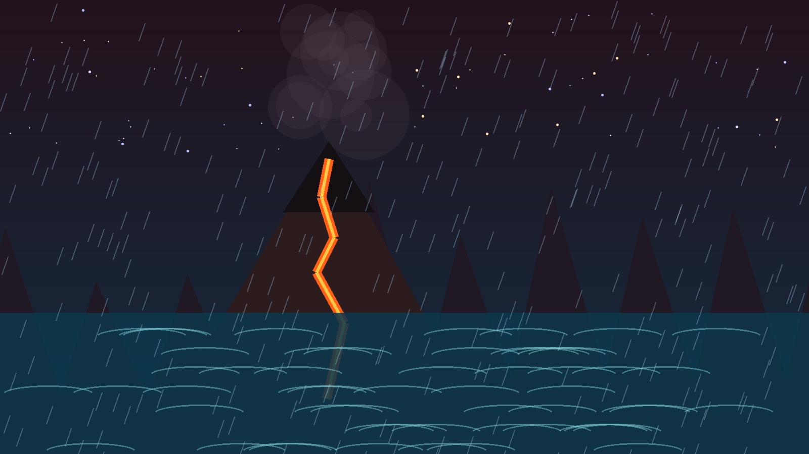
Capítulo 02
À medida que o planeta esfriou, o vapor de água presente na atmosfera começou a se condensar. Chuvas prolongadas ajudaram a preencher as regiões mais baixas da superfície, dando origem aos oceanos primitivos.
Esses ambientes aquáticos foram fundamentais para a história da vida.
Primeiras formas de vida
As primeiras formas de vida conhecidas eram microscópicas e muito simples, mas mudaram para sempre a história do planeta.
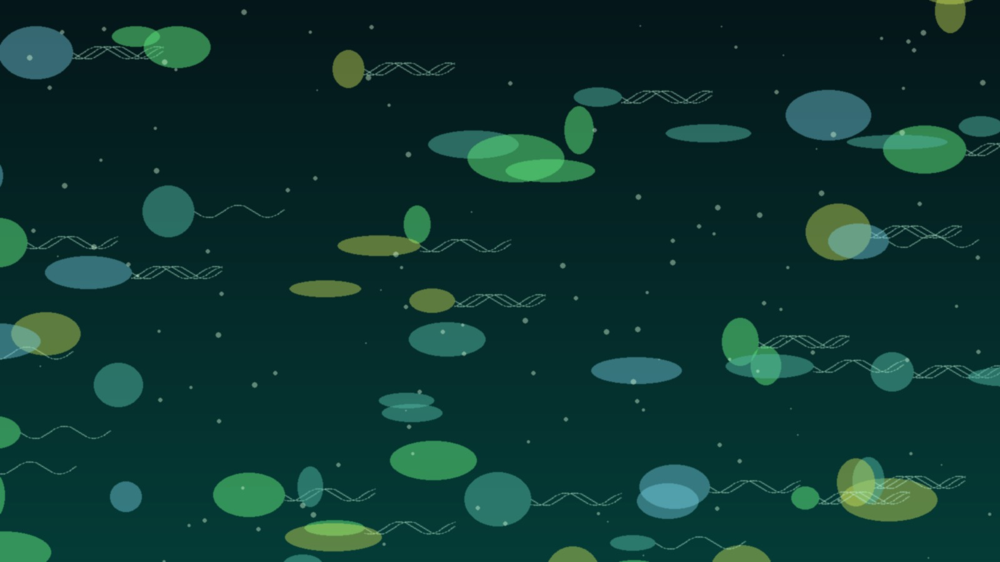
Organismos unicelulares surgiram nos ambientes aquáticos e representam os primeiros registros de vida conhecidos.
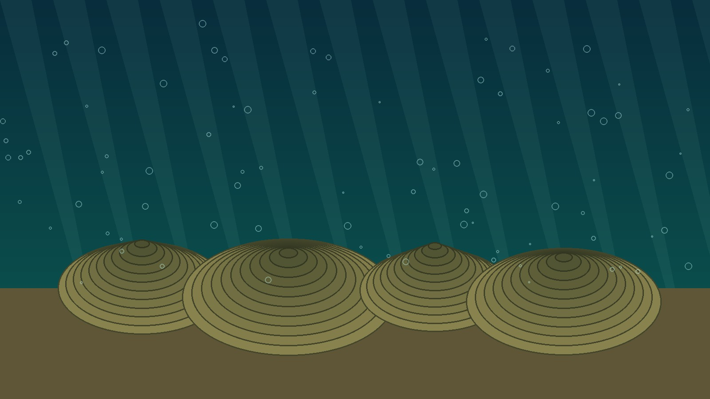
Estruturas formadas pela atividade de comunidades microbianas, importantes como evidência da vida antiga.
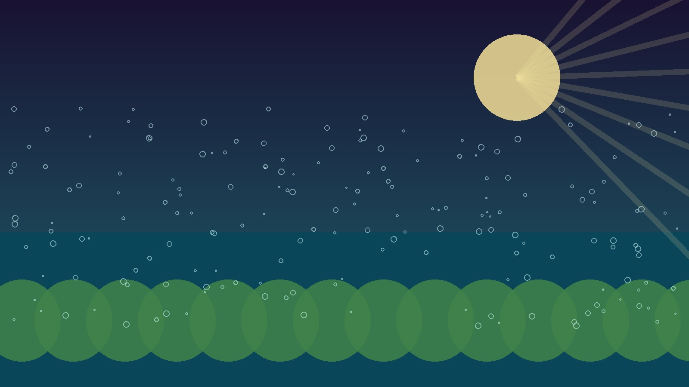
Alguns microrganismos passaram a liberar oxigênio, alterando lentamente os oceanos e a atmosfera.
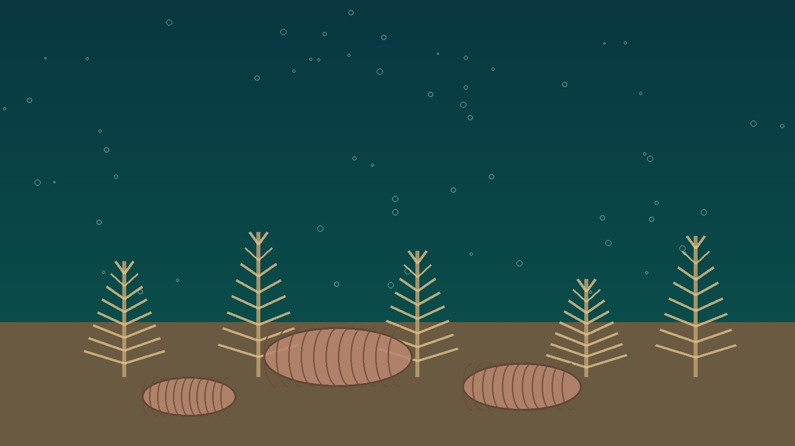
No final do Proterozoico surgiram organismos compostos por várias células.
Marcos da era
O planeta se consolidou a partir de materiais do Sistema Solar primitivo.
A Lua surgiu muito cedo na história do planeta.
A água líquida passou a ocupar grandes áreas da superfície.
Microrganismos deram início à longa história da vida.
Organismos passaram a liberar oxigênio no ambiente.
O oxigênio aumentou e transformou profundamente o planeta.
Surgiram organismos com estruturas celulares mais desenvolvidas.
Organismos com várias células apareceram no final do intervalo.
Você sabia?
O Pré-Cambriano corresponde a aproximadamente 88% de toda a história do planeta. Os dinossauros surgiram muito depois, quando a Terra já possuía oceanos, oxigênio e uma longa história de evolução da vida microscópica.
Galeria da era
A galeria reúne diferentes momentos da formação do planeta e da evolução da vida.
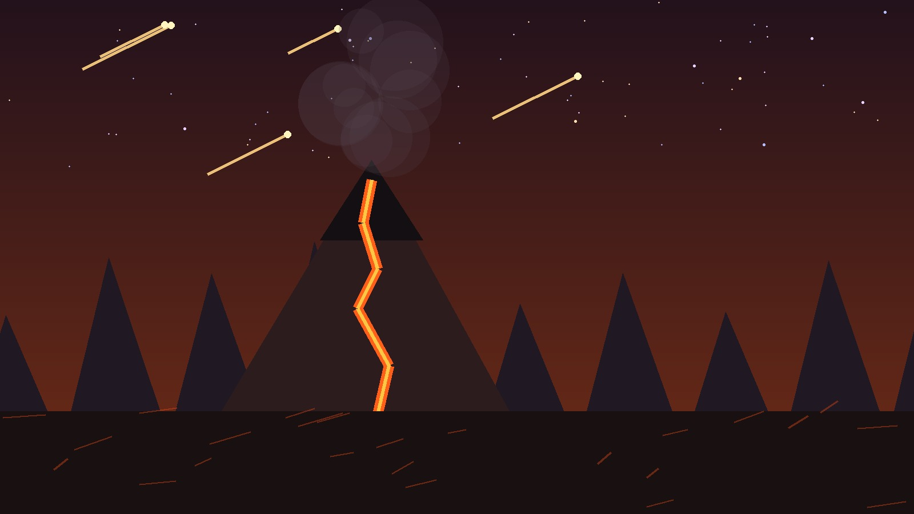
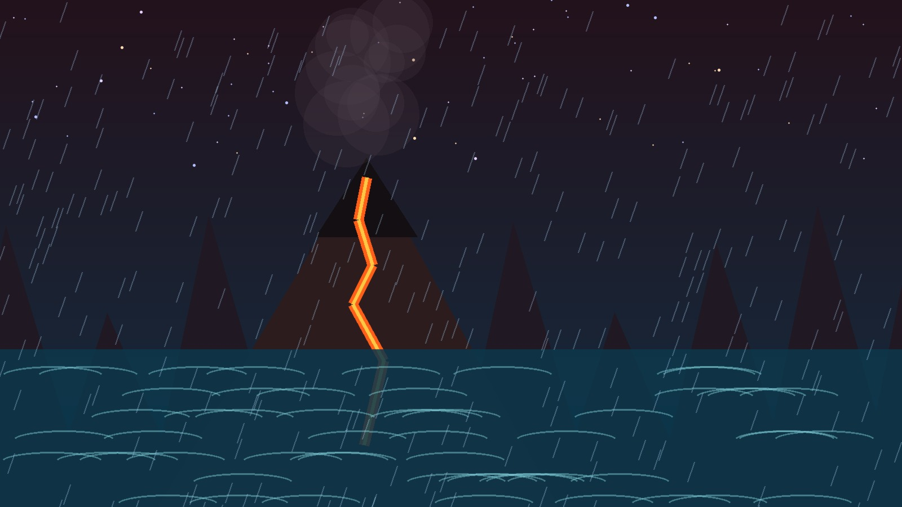
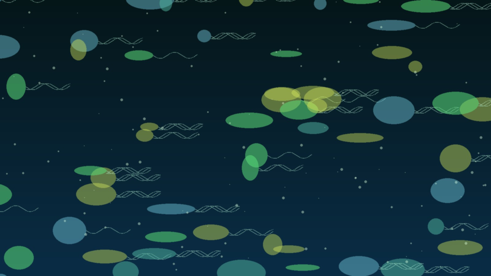
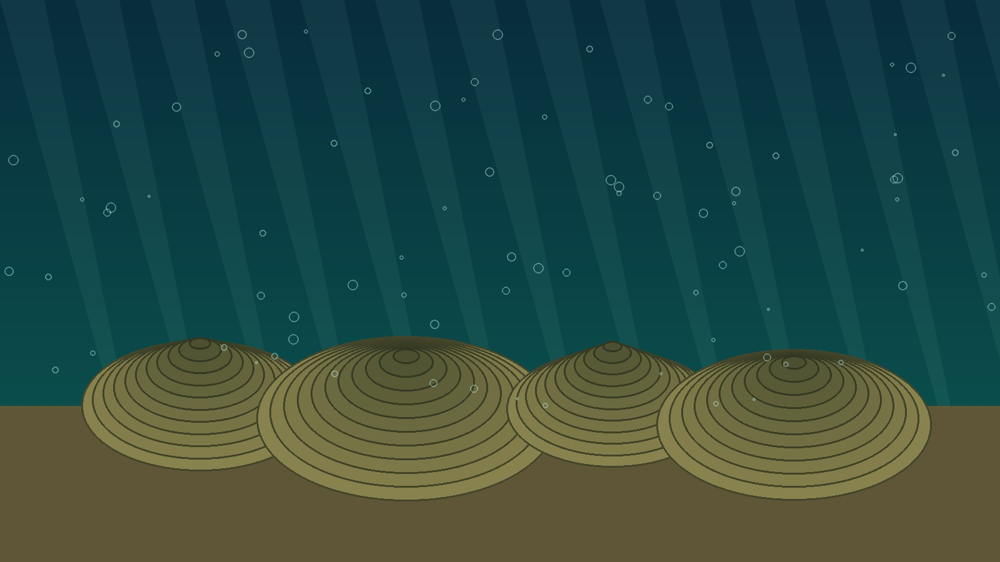
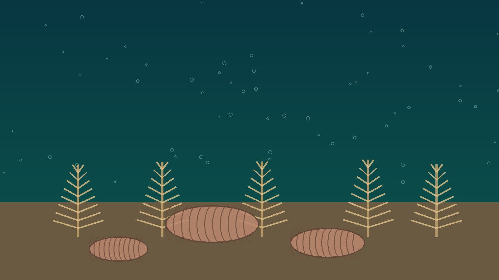
Desafio da era